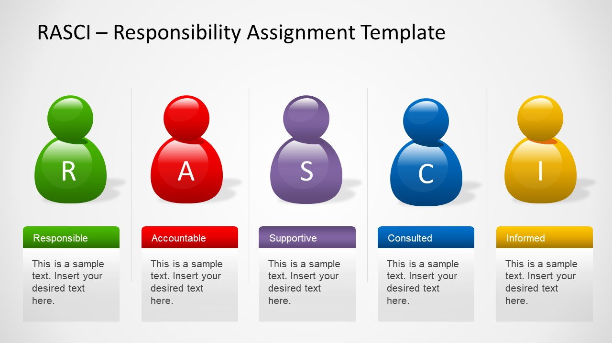

Adviesrapport voor ATAG en Nijhuis Industries
Momenteel zijn wij druk bezig met het opzetten van het adviesrapport voor ATAG en Nijhuis Industries. Met onderstaande link is de voortgang van het adviesrapport te volgen.
Momenteel zijn wij druk bezig met het opzetten van het adviesrapport voor ATAG en Nijhuis Industries. Met onderstaande link is de voortgang van het adviesrapport te volgen.
Op maandag 29 oktober hebben wij een vervolggesprek gehouden bij ATAG en Nijhuis. Tijdens deze gesprekken hebben wij geprobeerd duidelijkheid te krijgen over de customer service processen van ATAG en Nijhuis. Ook hebben wij informatie gevraagd over de customer journey. Deze krijgen wij van ATAG en Nijhuis in RASCI format aangeleverd.
Bekijk hier de presentatie die wij hebben gehouden tijdens de eerste pitstop op 26 oktober 2018
De volgende punten kregen wij als feedback op onze presentatie:
Momenteel zijn wij bezig met het verwerken van deze feedback op ons project. Wij willen ook iedereen bedanken voor de feedback die zij gegeven hebben.
Volg hier de voortgang van het Plan Van Aanpak!